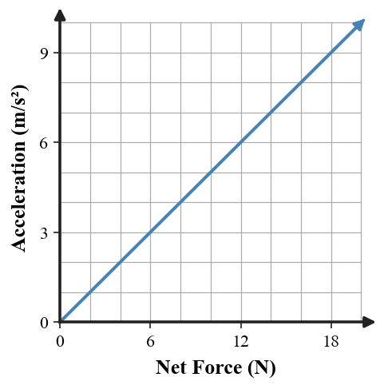

1. A puck glides east at steady velocity on nearly frictionless ice. No horizontal net force acts. Does the puck need a forward net force to keep moving? State what its acceleration is.
2. A cart has 10 N right and 10 N left acting horizontally. Identify the net horizontal force and the acceleration.
3. For a fixed mass, state what happens to acceleration when the net force is doubled.
4. For the same net force, state what happens to acceleration when the mass is tripled.
5. A net force points south on an object that is currently moving east. In which direction does the object accelerate?
6. Use the graph to describe how acceleration changes as net force increases for the same cart. What evidence in the graph supports a direct-proportion relationship?

7. A 7-kg sled experiences a 35-N net force to the right. Use $F_{net}=ma$ to determine its acceleration and direction.
8. An object accelerates at 4 m/s² when a 28-N net force acts. Determine the object’s mass.
9. Two carts each experience 24 N of net force. Cart A is 4 kg and Cart B is 12 kg. Calculate both accelerations and compare them.
10. A 5-kg cart accelerates at 3 m/s² west. Determine the net force, including direction.
11. A student says, “The cart is moving right, so its net force must point right.” The cart is actually moving right while slowing down. Critique the claim and identify the net-force direction.
12. Cart X and Cart Y start with the same velocity. X has twice the mass of Y, but both experience the same net force for the same time. Predict which velocity changes more and defend the prediction with Newton’s Second Law.
13. Which statement best distinguishes force from motion?
14. If mass stays constant while net force increases from 8 N to 24 N, the acceleration becomes
15. For the same net force, which object has the smallest acceleration?
16. A 6-kg object has a net force of 18 N. Its acceleration magnitude is
17. A 30-N net force produces 5 m/s² of acceleration. What is the mass?
18. If the net force on a moving object becomes zero, the object’s acceleration becomes
19. Acceleration points in the same direction as the
20. Which change would double acceleration without changing mass?